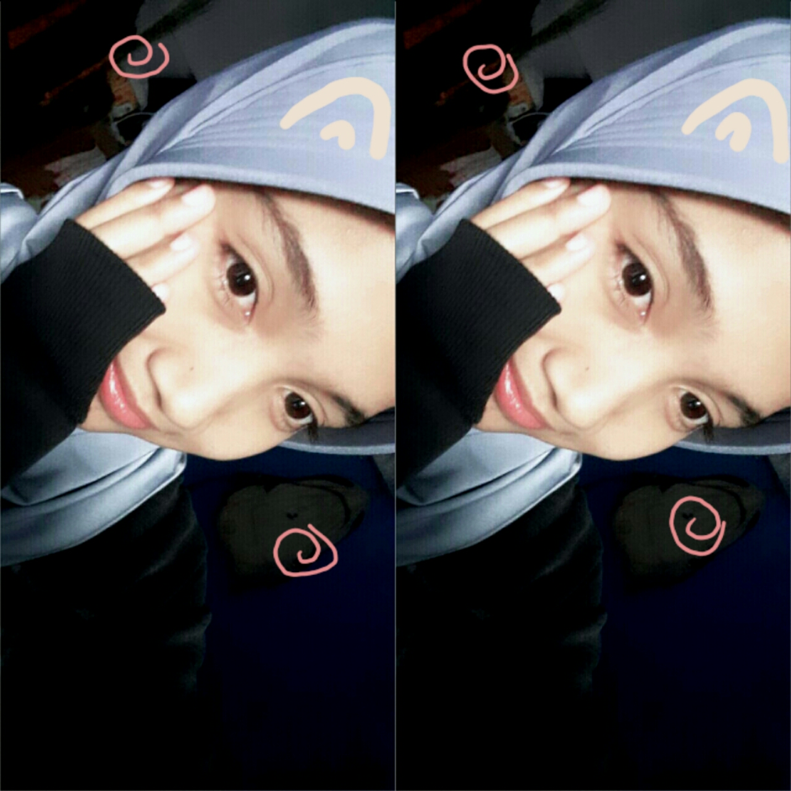

Alyya Puspitasari
Fresh Graduate, Rekayasa Perangkat Lunak (RPL)
Tentang Saya
Saya Alyya Puspitasari, fresh graduate dari sekolah SMK Negeri 3 Banjar jurusan Rekayasa Perangkat Lunak (RPL). Dengan bekal ilmu dan pengalaman yang di dapat selama sekolah, saya merasa sangat bisa di andalkan dalam menyelesaikan pekerjaan baik secara kelompok ataupun individu. Merasa selalu mampu menyelesaikan masalah yang ada di setiap melakukan pekerjaan dengan tenang. Sudah cukup mahir dalam menggunakan komputer.
PORTOFOLIO
- Web Aplikasi Peduli Diri
- Web Aplikasi Pengaduan Masyarakat
- Web Aplikasi Absensi
- Cv Online
HOBI
- Bernyanyi
- Membaca
Riwayat Pendidikan
2017 - 2018
SD Negeri 1 Baregbeg
2020 - 2021
SMP Negeri 1 Lakbok
2024 - 2025
SMK Negeri 3 Banjar
Rekayasa Perangkat Lunak
Keterampilan
- Bertanggung Jawab
- Disiplin
- Kreatif & Inofatif
- Mampu menggunakan MS Word
- Mengoprasikan VS Code
- Coding (php native, html)
Pengalaman Organisasi
- Organisasi Intra Sekolah (OSIS)